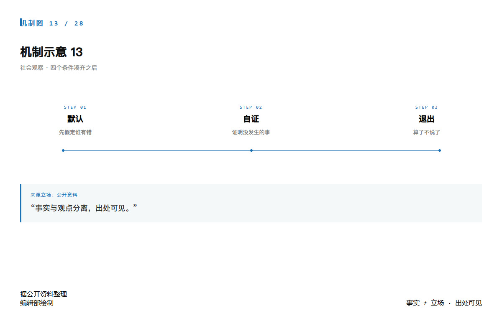

当讲理没用，对轰怎么成了选项
社会观察 · 四个条件凑齐之后
「魔法要用魔法来打败。」这句话被喊出来的时候，讲理那条路已经堵了一阵子了。一个男性在评论区打出这句话，往往不是因为好斗，是因为他试过别的办法，一条一条发现都走不通。
具体骂战不转述，也不评价。下面的判断来自公共语料里的策略命名，和对成本收益的结构归纳：写的是它为什么会发生，不是教谁去做。引文照抄网络流行语，具体事件与指控一个字不碰。
你刷到的性别对立，未必是两边天生更恨对方，而是发声的收益表被改写了。看懂这张表，至少能分清情绪和算计——也能明白一个男性为什么会抓起对手的武器，而不是继续讲他的道理。
对轰不是新发明，弱势叙事用对方的办法反击，历史上一直有。它在此时此地被普遍采用，是因为四件事同时成立：讲理的成本高过收益；默认设定堵住出口；程序结论以年计救不了场；情绪动员的工具链又高度成熟。四个凑齐，个别人的撒气就成了可选项。
这里说的「理性」不是夸人。对轰是算完账之后的选择：讲理零收益，沉默零收益，对轰至少有「让对方也疼一下」的非零收益。一个男性在两性议题里坐惯了被告席，发现只剩这一项正收益，选它的人自然就多。要改的不是人的心性，是那张收益表。
回到这套观察关心的那批人：男性在默认设定里长期坐被告席，讲道理的通道持续贬值，程序结论又赶不上热搜。三条路都堵着，对轰几乎成了唯一还能听见回声的形态。理解这一点，才能理解性别对轰为何在扩大，而不是简单骂一句「没素质」。
拆掉段子和骂战，策略结构只有三种基本型。一是镜像动员：对方写小作文，这边也写；对方刷话题，这边也刷。二是解构默认：把「这还需要说吗」做成复读体，让免论证的前提重新变得可笑。三是代价展示：不反驳观点，只展示按你的规则你会付出什么。
三型经常混用，还有一个共同点：都不在事实层作战，都在规则层作战。双方往往清楚对方说的事实未必全错，但事实层的裁判——程序、机构、媒体——已经失灵，那就打规则，谁先把对方拖进它自己的规则里出丑，谁赢一回合。
这里必须写清：这是退化，也是现有定价下的最优退化。男性用规则打规则，看似占了便宜，实则承认了事实层已经没救。把这三型当成聪明打法来读，就忽略了它恰恰是讲理失败后的产物，是无奈，不是本事。
📌 一个值得记住的判断
对轰有效，但不体面，而且有代价。把它写成反击的爽文，只是把站队换了个方向；把它写成堕落的闹剧，又否定了男性真实存在的表达困境。两头都不诚实。
收益是真的。第一是能被看见，这是现有系统里唯一能换来别人目光的手段；第二是短期威慑，习惯单方面定性的人开始计价；第三是群体凝聚，戏谑和梗提供归属感，缓解自嘲的内伤。把这三样说成幻觉，等于没看见男性真实的困境。
但收益旁边就站着成本。用规则打规则的人同样被规则困住，账号会被冲、被举报、被做成合订本；火力不认个体，只想安静过日子的人反复中弹；事实层的公共品加速枯竭；对轰还会培育更强的对轰。这笔账，得算到底。
男性尤其要算清这一笔：当他用对方的武器反击，误伤的常常是和自己同一处境、只想安静生活的人。按标签扫射而不按个体开火，这套打法伤不到真正的对手多少，却把周围的人先得罪一遍。这不是威慑，是自耗。
看到这里，别急着把谁当英雄。对轰是止痛药，不是治疗方案。止痛药有它的正当性，但一个只剩止痛药的医疗体系，病灶在体系。男性骂赢一场，留不下一条可信的结论，只留下下一场更大的骂战，和更深的裂痕。
写这些不是为了教人怎么打。把策略结构写清楚，只是为了解释它为什么会发生。谁把这段当战术手册读，谁就在把一份社会观察读成武器说明书——那是误读，也是这套观察明文反对的用法，从一开始就不是想教人这么干。
能谈的方向，是把澄清与程序性结论也送到能被看见的位置，让讲理追平对轰。追平之前，任何「别对轰」的呼吁，都是要求男性单方面裁军，不公平也没用。但追平之后，男性是否愿意回到事实层，才是真问题。讨论到这里，就够了。
网络流行语，据公共语料观察
「魔法要用魔法来打败。」
它概括了一种自证策略的自我命名，句式本身是观察对象。放在两性议题里，它标记的是男性讲理通道失效后的转向，不是值得效仿的打法。

▲ 对轰的触发条件与回路（编辑部绘制）
✍️ 你第一次看到「魔法对轰」，是在哪个话题下？
当时觉得解气，还是不对劲？评论区说说。觉得有用，点个赞、点个「在看」，转给也会刷到这类话题的男性朋友。
下一篇：四张账单摆出来，看看这笔账到底谁在付。
参考
「魔法要用魔法来打败」，据公共语料观察，作机制概念使用，指非正式自证与反击策略，并非主张。
四个触发条件、三种策略型与成本收益表为归纳框架，非实证统计；成本发生概率无公开数据。
「性别对轰扩大源于收益表改写」为机制推论，非道德评价；具体骂战与个案指控不予转述、不评价。
社会观察，不站任何性别立场。事实据公开来源，未证实指控不转述、不评价。拆解规则是为了理解，不是行动指南，更不是反击手册。